(a)
(b)
Figure 1.25. State changes in logic circuits: (a) synchronous logic changes state on the leading clock pulse (0-1 transition), and (b) asynchronous logic does not require a clock to change state - adapted from [Maf01].
Digital logic is hardware that implements the functions of Boolean algebra, which are or, and, not, as well as combinations of these functions. Boolean algebra operations are extensively employed in computing, and form the basis for the vast majority of arithmetic operations, as we shall see later in this course.
We begin this section by discussing the operands and operations that comprise Boolean algebra, then show how these logical operations are implemented in simple digital devices.
The kind of logic that we use in computing is generally called formal logic, which is one of the three bases of mathematics. (The other two bases are measurement theory and algebraic manipulation.) The type of formal logic that we will use in this course is called Boolean logic or Boolean algebra (the terms are interchangeable). There are other types of formal logics, such as interval logic (often called fuzzy logic), but we will not consider them in this course.
Definition. An algebra is a tuple A = (F,O) that contains a set of values F and a set of operations O on those values.
Example. The algebra of real numbers contains operations such as addition, multiplication, and division, with operands selected from the real numbers R.
Definition. Boolean algebra B = ({0,1}, O) contains a set of operations O called logical-or, logical-and, logical-not, etc., that operate upon numbers in the set {0,1} (i.e., operate on zero(es) or one(s)).
Example: logical-not - The not function inverts the value of its input. Thus, 0 = not(1) and 1 = not(0). Because the not function has only one input, it is called a unary operation.
Example: logical-and - The and function takes the minimum of its two inputs. Thus, 0 = and(0,0) = and(0,1) = and(1,0). However, 1 = and(1,1). Because the and function has two inputs, it is called a binary operation. (This use of the word "binary" is similar to calling the set {0,1} the "binary numbers", because there are only two numbers in the set.)
Example: logical-or - The or function takes the maximum of its two inputs. Thus, 0 = or(0,0), with 1 = or(0,1) = or(1,0) = or(1,1).
It is important to note that all logical operations can be constructed from not and and. In your discrete mathematics course (COT3100 at UF/CISE), you will see (or have seen) how to do this. For now, it is useful to accept this assertion and continue on.
We next consider how digital logic is represented in term of truth tables and graphic symbols used in circuit diagrams. In Section 1.4.3, we will discuss how digital logic can be implemented in hardware.
When we are working with digital logic, it is easy to describe the functionality of a logic device in terms of a truth table.
Definition. A truth table is a tabular representation of a logical operation that completely defines the operation.
Observation. A logical operation with N inputs will have 2N entries in its truth table. If an operation has many inputs, then its truth table can be represented compactly by listing only those entries that have nonzero output.
There are also a variety of graphic symbols that are used with digital logic functions. In Figure 1.13, we show the symbols for the and as well as or gates, with their truth table representations. If we represented these truth tables compactly, then the and operation would have only one row in its truth table, namely, [1 1 1].
Self-Exercise. How many rows are there in the compact representation of the or operation's truth table, and what are these rows?
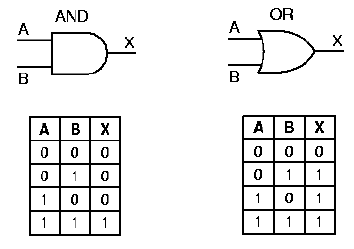
Figure 1.13. Graphic symbols and truth tables for the logic
gates that implement and as well as or operations,
adapted from [Maf01].
The not gate is represented graphically as shown in Figure 1.14a. By appending a circle to the output of a gate symbol, we can represent the effect of putting a not gate after the gate represented by the symbol. For example, the output of the and gate is inverted by the not gate to form the nand gate, as shown in Figure 1.14b. A similar situation is shown for the nor gate in Figure 1.14c. Note that the truth table for the nand operation has three nonzero entries, whereas the truth table for the and operation had only one nonzero entry. A symmetric condition exists for the nor operation.
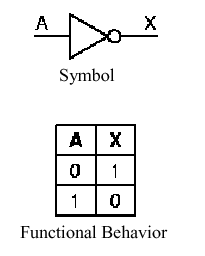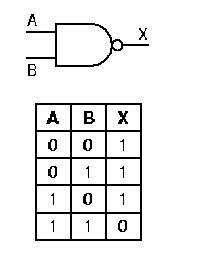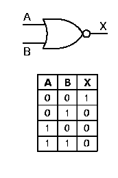
Figure 1.14. Graphic
symbols and truth tables for negative logic gates that implement (a)
not, (b) nand, (c) nor operations - adapted from
[Maf01].
In the next section, we discuss how these basic gates are implemented in electronic circuits.
In 1947, scientists at Bell Laboratories developed the transistor, which is a circuit element whose conductivity varies with applied voltage. The advantage of the transistor is that a relatively small input current can be used to control a much larger power-supply current. The general concept involved in the operation of the transistor is similar to that of the vacuum tube (recall our discussion of first-generation computers), but requires much less power and space. Also, the transistor can change state much more quickly than a vacuum tube - as sometimes said in electrical engineering, the transistor has a higher switching frequency.
1.4.3.1. Simple Model of A Transistor NOT Gate. Figure 1.15 shows a diagram of a transistor that implements negative logic. Note that the collector supply voltage Vcc is positive, and the current from this power source flows through a current limiting resistor, whose symbol is the jagged line below Vcc. The resistor is designed to prevent damage to the transistor junction, which is delicate. (This junction is comprised of several semiconducting materials deposited on a small wafer of silicon or germanium called substrate. As we discussed in Section 1.3, the dimensions of features etched into the substrate are presently on the order of 0.2 micron, so it doesn't take much excess current to cause electrical arcing across these features, which renders the transistor useless.)
A control voltage (shown in Figure 1.15 as the input signal A) is applied to the base of the transistor. If A = 0, the conductivity of the transistor is low, and the current from the collector is not grounded at the emitter. This causes a voltage difference to be present between the emitter (at ground) and the collector (at Vcc). Symmetrically, when A = 1 (i.e., a voltage significantly higher than zero), then the conductivity of the transistor is enhanced, and Vcc is grounded. This produces little or no voltage drop across the collector-emitter junction, and the output at the collector is effectively zero. When the output of the transistor is taken from the collector (as shown in Figure 1.15), these two conditions cause a not operation to be implemented.
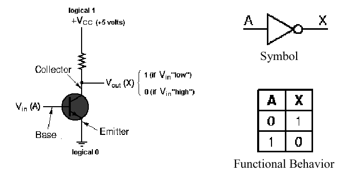
Figure 1.15. Transistor implementation of a NOT gate,
adapted from [Maf01].
1.4.3.2. NAND Gate Circuit. The nand gate is implemented using the operating principle of the not circuit shown in Figure 15. As shown in Figure 1.16, if both transistors have a high input (A = 1 and B = 1), then both transistors conduct, and Vcc is grounded. This produces little or no voltage drop from the voltage supply to ground, and near-zero voltage (logical zero value) occurs at the gate's output. This implements the entry for zero output in the nand gate's truth table, shown again in Figure 1.16 for purposes of verification.
If either (or both) input(s) of the nand circuit shown in Figure 1.16 is (are) low, then the two transistors taken together do not form a conducting path, and there is a significant voltage drop (logical one) at the gate output. This implements the nonzero entries of the nand gate's truth table.
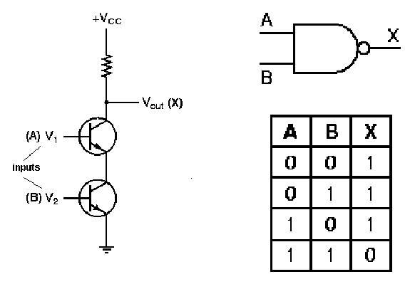
Figure 1.16. Transistor implementation of a NAND gate,
adapted from [Maf01].
1.4.3.3. NOR Gate Circuit. The nor gate is implemented using the operating principle of the not circuit shown in Figure 15. As shown in Figure 17, if both transistors have a low input (A = 0 and B = 0), then both transistors do not conduct, and Vcc cannot be grounded. This produces a significant voltage drop from the voltage supply to ground, and a logical one value occurs at the gate's output. This implements the sole entry for unitary output in the nor gate's truth table, shown again in Figure 17 for purposes of verification.
Conversely, if either (or both) input(s) of the nand circuit shown in Figure 1.16 is (are) high, then either (both) transistor(s) form a conducting path that grounds Vcc, yielding no significant voltage drop (logical zero) at the gate output. This implements the zero entries of the nor gate's truth table.
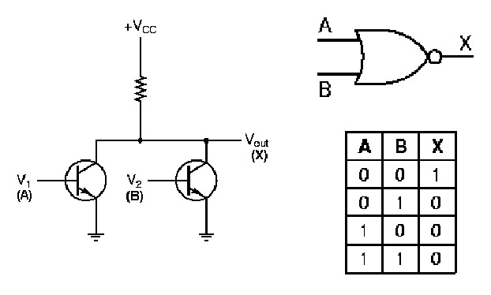
Figure 1.17. Transistor implementation of a NOR gate,
adapted from [Maf01].
Integrated circuits often contain multiple gates in one in-line package. For example, the layout of a quad nand gate IC is shown in Figure 1.18. Note that the notch in the circuit packaging material, shown on the left-hand side of the IC, helps orient the IC user to the pin ordering scheme. Each nand gate input and output pin is unique, with a pin for the common supply voltage Vcc, and another pin for common ground.
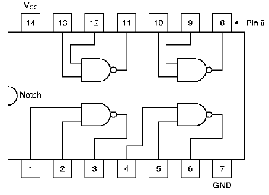
Figure 1.18. Example of quad nand gate integrated circuit
pin-out diagram, adapted from [Maf01].
We next examine how the laws of Boolean algebra can be used to generate designs for more complicated logic circuits.
In this section, we present several examples of how complex logic circuits can be designed from equations that represent the circuit's functionality, or from truth tables.
1.4.4.1. Laws of Boolean Algebra. Each type of formal logic has rules for manipulating operations and operands. In Boolean algebra, the following rules hold:
Assumption. Let B = {0,1}, with p,q,r 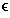 B and x,y,z R. This assumption will hold for the subsequent discussion.
Identity. In arithmetic with real numbers, x · 1 = x and x + 0 = x. In logic, the analogous statements are
p and 1 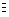 p, and p or 0 p .
Domination. In arithmetic with real numbers, x · 0 = 0. The logical analogue is
p and 0 0 .
Symmetrically, p or 1 1 .
Idempotency. This property can be used to simplify and or or operations, i.e.,
p or p
p
p and p
p .
Double Negation. In arithmetic, -(-x) = x. In logic,
not(not(p)) p.
Commutativity. In arithmetic, addition and multiplication are commutative, i.e., x + y = y + x and x · y = y · x. In logic, we have analogous formulations:
p or q q or p
p and q q and p .
Associativity. In arithmetic, addition and multiplication are associative, i.e., (x + y)+ z = x + (y + z) and (x · y) · z = x · (y · z). In logic, we have the analogous formulations:
(p or q) or r p or (q or r)
(p and q) and r p and (q and r) .
Distributivity. In arithmetic, multiplication distributes over addition. In logic, we have a similar situation:
p and (q or r) (p and q) or (p and r)
p or (q and r) (p or q) and (p or r) .
DeMorgan's Laws. Manipulation of logical statements is greatly aided by DeMorgan's laws, which describe a property that resembles distributivity:
not(p or q) not(p) and not(q)
not(p and q) not(p) or not(q) .
Self-Exercise. Construct truth tables for (a) distributive and (b) DeMorgan's Laws, listed above.
1.4.4.2. Circuit Equivalence. Using the preceding equivalences, especially DeMorgan's laws, it is possible to transform one circuit form (e.g., nor logic) into another form (e.g., nand logic). Here, nor logic uses nor gates, and symmetrically for nand logic.
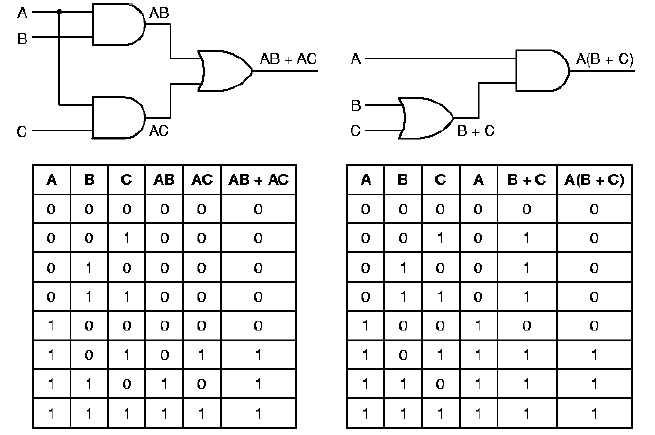
Figure 1.19. Example of quad nand gate integrated circuit
pin-out diagram, adapted from [Maf01].
For example, Figure 1.19 shows a circuit that outputs a one when inputs A and C are both one, or when A and B are both one, and outputs a zero otherwise. Note that the left-hand circuit has the same truth table as the right-hand circuit. Also note that the circuit equation for the left-hand circuit (AC + AB) can be rewritten using the distributive law (from Section 1.4.4.1) to yield A(C+B), which is the equation for the right-hand circuit. Here, the minterm AC means (A and C), and the minterm C + B means (C or B).
Logic transformations are primarily used for circuit minimization. For example, Note that the right-hand circuit in Figure 1.19 has only two gates, while the left-hand circuit uses three gates. This is because the expression AC + AB requires three operations (two and, one or), while the expression A(C + B) requires two operations (one and, one or).
1.4.4.3. Majority-Vote Circuit. Given N inputs a1, a2, ..., aN, the majority vote function outputs a one when N/2 or more of the inputs are ones, and zero otherwise. (If N is odd, then N/2 is rounded up to the nearest integer.) Figure 1.20 illustrates a logic circuit that implements the majority vote function for three inputs. Observe that the inputs A, B, and C and their negations (represented by a bar above each variable) are present in buses (vertical lines), then are combined to form the four minterms listed in the equation for M. Including the not gates used for negation, eight gates are required to implement this circuit. Note, however, that the and gates each have three inputs (corresponding to the three variables in each minterm) and the or gate that produces the circuit output has four inputs (corresponding to the four minterms of the equation for M).
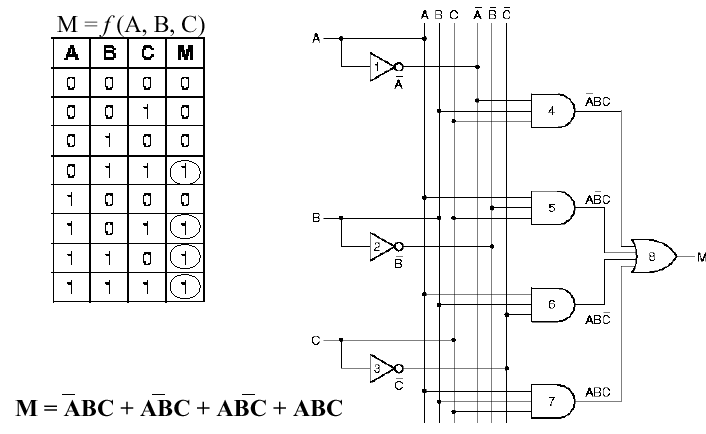
Figure 1.20. Example of Majority Vote Circuit, its truth table,
and the governing equation, adapted from [Maf01].
Self-Exercise. How many minterms would there be in the equation for the majority-vote circuit with four inputs? five inputs? N inputs?
Combinatorial logic circuits include multiplexers, demultiplexers, encoders, decoders, and comparators. A combinatorial circuit has many inputs and one (or, sometimes, more than one) output. The output(s) of a combinatorial circuit are uniquely determined by the inputs. Combinatorial circuits have no memory elements. We will begin our discussion of combinatorial circuits with the simple example of a comparator, then progress to the multiplexer and decoder.
1.4.5.1. Comparator. It is often useful to determine whether or not two operands are equal, which is called comparison. A digital logic circuit that determines whether or not two four-bit operands A = (A0,A1,A2,A3) and B = (B0,B1,B2,B3) are equal is shown in Figure 1.20. The algorithm that the circuit implements is based on the concept of an exclusive-or operation (also called an xor operation), which is instantiated in an xor gate.
The xor function resembles the inclusive or, except that when both inputs are high, the xor output is zero, as shown in the following truth tables:
A B X A B X
-+--------------- -+---------------
xor | 0 0 0 or | 0 0 0
| 0 1 1 | 0 1 1
| 1 0 1 | 1 0 1
| 1 1 0 | 1 1 1
After the xor operation is applied to each bit of A and B (we call this bitwise processing), the xor outputs are operated on by a quad-input nor gate. Thus, if any of the bits are different, the or part of the nor gate will return a one, and the not part of the nor gate will return a zero. If A0 = B0 and A1 = B1 and A2 = B2 and A3 = B3, then the nor gate will applu the or operation to the outputs of the xor gates (which will all be one) to yield a one, which will be inverted at the output of the nor gate to yield a zero.
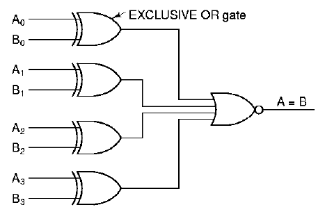
Figure 1.21. Example of Comparator Circuit, adapted from [Maf01].
1.4.5.2. Multiplexer. A multiplexer has n control signals and 2n inputs (sometimes called data lines). The purpose of a multiplexer is to use the control signals to decide which of the inputs will be routed to the multiplexer's output. Thus, the multiplexer is a type of switching device that chooses its output from among its inputs, based on control signals.
For example, Figure 1.22 illustrates a multiplexer with n = 2 control lines (A, B) and 2n inputs (D0 through D3). Note that inverters (not gates) provide the complement of A and B for constructing the minterms of the circuit's governing equation.
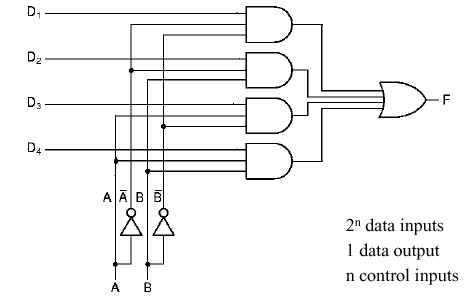
Figure 1.22. Example of Multiplexer Circuit, adapted from [Maf01].
Self-Exercise. Write the governing equation of the multiplexer shown in Figure 1.22. How does this compare with the governing equation of the majority-vote circuit shown in Figure 1.20? In what detailed ways are these circuits different?
1.4.5.3. Decoder. A decoder can be loosely thought of as a kind of reverse multiplexer, without the control lines. A decoder has n inputs, and 2n outputs. The input indexes the output - for example, if the input is 000, then the output D0 will be high. If the input is 001, (or 010) then the output D1 (resp. D2) will be high, and so forth.
For example, Figure 1.23 illustrates a decoder with n = 3 inputs (A, B, C) and 2n = 8 outputs (D0 through D7). As in the multiplexer circuit, inverters provide the input complements for constructing the minterms of the circuit's governing equation.
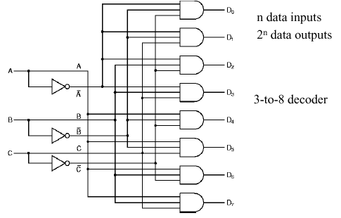
Figure 1.23. Example of Decoder Circuit, adapted from [Maf01].
Self-Exercise. Write the governing equation of the decoder shown in Figure 1.23. How does this compare with the governing equation of the multiplexer shown in Figure 1.22? In what detailed ways are these circuits different? (Hint: Think about minterms, complementation, and DeMorgan's laws.)
Thus, decoders can be used to select one object from a large number of indexed objects, given a Boolean representation of the index of that object at the decoder's input. For example, if the decoder outputs each control a relay that switches a voltage through a different resistor value, then it is possible to construct an n-to-2n decoder that converts an n-bit input signal into an analog voltage ranging from zero to 2n units. However, the circuitry for large n can become prohibitive, so this technique is of pedagogic interest only.
It is readily seen that circuits such as those shown in Section 1.4.5 can become prohibitively complex, large, and power-consumptive if implemented on a circuit board with many chips containing various types of logic gates. Thus, it is reasonable to ask how we might put a complex digital circuit on a chip. There are two ways to do this. First, the circuit can be custom-fabricated, which is very expensive, especially for small quantities. Second, one can use programmable logic, which provides many different types of gates on a chip, with a programmable network of interconnects between the gates. Programmable logic has widespread software support, so it is relatively easy (using modern design tools) to design a circuit, reduce it to a logic schematic (diagram of connectivity and parameters of logic elements in a circuit), then use a computer to program a special logic device called a PLA (programmable logic array).
In Figure 1.24, we illustrate a simple PLA circuit. This type of circuit is called two-level logic because there are two levels of processing (i.e., and gates at Level 1, or gates at Level 2).
Self-Exercise. What are the two levels of processing in the circuits shown in Section 1.4.5?
In practice, programmable logic devices are made in a variety of gate configurations, connectivity networks, and gate densities. One of the more important types of PLAs is called FPGA, for Field Programmable Gate Array. FPGAs represent a new method of designing custom ICs. Unlike conventionals Gate Arrys, FPGAs can be designed and programmed by a computer user (e.g., a hardware designer), and represent an advanced stage of evolution from Programmable Logic Devices (PLD). FPGAs are advantageous because they have a much higher gate density than PLAs or PLDs, and offer greater flexibility. FPGAs are useful for rapid prototyping, especially of large or complex circuits. Designs can be described using (a) schematic layout tools, (b) synthesis from a hardware description language model, or (c) high-level language driven synthesis tools.
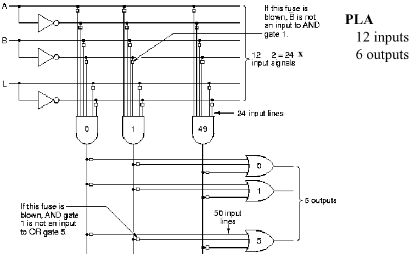
Figure
1.24. Example of programmable logic array, adapted from
[Maf01].
The circuit shown in Figure 1.24 is a fused-link circuit. To program this circuit, a software-driven programming device merely applies a large voltage to open-circuit (or "blow") each of the fuses (small boxes in Figure 1.24) that control access to a given input of a specific gate. For example, if the fuse at the junction of and gate #1 output and or gate #5 input is blown, then the and gate output cannot is not an input to that or gate.
There is a paper on the Web on Design of High Speed, Low Powered Dynamic Programmable Logic Arrays that is useful for advanced reading in this interesting topical area.
We next discuss clocked logic circuits.
Thus far, we have considered only asynchronous logic circuits, in which the input pulses are allowed to propagate through the circuit at their own speed. This is acceptable for simple logic designs, but has the disadvantage that one needs to wait a short (usually somewhat indeterminate) time for the circuit output to stabilize. In time-critical applications where timing precision is required, the asynchronous approach to circuit design and implementation does not always produce useful results, due to indeterminacies in the output settling time.
To remedy this problem, synchronous logic circuits have been developed whose transition from one state to another is mediated by a clock pulse. (This can be thought of like people in a band playing in time to the conductor.) The vast majority of logic circuits use edge triggered clocking, which means that the state change in a circuit (e.g., from State Element 1 to State Element 2 in Figure 1.25a) occurs only when the clock pulse changes from a zero value to a one.
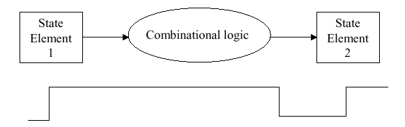
(a)
(b)
Figure 1.25.
State changes in logic circuits: (a) synchronous logic changes state
on the leading clock pulse (0-1 transition), and (b) asynchronous
logic does not require a clock to change state - adapted from
[Maf01].
To better understand synchronous logic, which is the dominant form in digital computing, we next examine how a clock works. We then discuss latches and storage circuits such as clocked latches and flip-flops.
1.4.7.1. Principles of the Clock. When we think of a digital clock, the image of a numerical timekeeping device comes to mind. However, in digital logic, a clock is really a very precise oscillator that changes its output from zero to one, then back to zero in a regular, predictable way.
For example, in Figure 1.26, a clock is comprised of an oscillator whose output is thresholded to form a train of rectangular pulses, called a square wave. The clock period is measured from one 0-1 transition to the next 0-1 transition. The addition of a delaying device after the clock output causes phase lag between the clock signals C1 and C2.
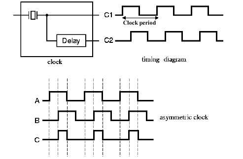
Figure
1.26. Example of clock output, with symmetric (A) and asymmetric
(B and C) clock pulses, adapted from [Maf01].
Within a clock cycle, there is the time a pulse is high (tH) and the time it is low (tL). If tH does not equal tL within a small measurement error, then we say that the clock pulse is asymmetric. This term also holds for a phase-shifted pulse, as shown in signal B of Figure 1.26.
If tH< tL within a small measurement error, then we say that the pulse duty cycle is less than one. This case is shown in Figure 1.26, for the clock signal labelled C. If tH > tL within a small measurement error, then we say that the pulse duty cycle is greater than one.
1.4.7.2. The SR Latch. Early in computing practice, it was desirable to store a bit in a small memory device. Since the only usable storage devices were relays (an electromechanical device) and delay lines that used the metal Mercury (chemical symbol Hg), it was decided to adapt asynchronous relay-based logic (very slow) to produce a storage element that could hold one bit.
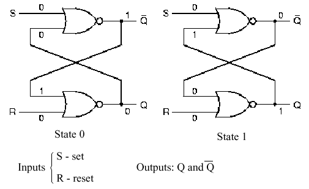
Figure
1.27. The two states of the SR latch, adapted from [Maf01].
Figure 1.27 shows a modern version of this concept, called the SR Latch, which is implemented in nor logic. (Using DeMorgan's Laws, it is possible to implement this in nand logic.) When the Set input is high and the Reset input is low, State 1 results, and conversely for State 0. Thus, the Set (Reset) puts a 1 (0) value at the output Q. It is not difficult to see that placing this circuit after an oscillator could product the clock pulses shown in Figure 1.26.
Self-Exercise. Derive the truth tables for State 0 and State 1 of the SR latch shown in Figure 1.27.
1.4.7.3. Clocked Latches. The problems with the asynchronous SR Latch shown in Figure 1.27 are (a) the S and R inputs can be energized at any time, and (b) settling of the circuit to yield its output value occurs immediately after the S or R signals are provided. This situation is remedied in the Clocked SR Latch of Figure 1.28, where two and gates are used in conjunction with a clock to drive the SR Latch of Figure 1.27.
The circuit works the same as the SR Latch, with the following important exceptions. First, if S or R are one, and the clock value is zero, then the output of the and gates is zero. If S or R equals one, and the clock is high, then the S,R values are passed to the input of the SR latch, but only while the clock is high. This gives the latch time tH to settle (see Section 1.4.7.1). If S or R are zero, then it doesn't matter what the value of the clock is - the inputs to the SR Latch remain zero.
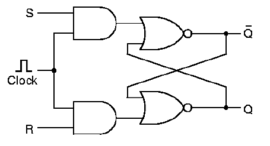
Figure
1.28. The Clocked SR Latch, adapted from [Maf01].
Self-Exercise. (1) Derive the truth table for the clocked input to the SR Latch in Figure 1.28, using the and gate logic, as shown. (2) Prove (using truth tables) how this could or could not be implemented in nor logic.
A problem with the clocked SR latch is that it has two inputs, and they have a forbidden configuration. Namely, one cannot apply both S = 1 and R = 1 to the circuit simultaneously - it won't know which state to enter! This problem is resolved with the Clocked D Latch, which is a minor variation on the clocked SR latch.
As shown in Figure 1.29, the D latch adds a not gate or inverter to the input of the clocked SR latch, so that its "S" and "R" inputs always have opposite values. In order to avoid confusion with the SR latch, the input is called D. The clock pulse is applied to the input, as it was with the SR latch.
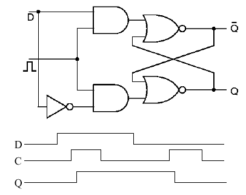
Figure
1.29. The Clocked D Latch, adapted from [Maf01].
As shown in Figure 1.29, the D latch has the following timing behavior (from the D,C,Q signals below the latch circuit). The D signal is the input (data), C is the clock, and Q is the output. When D goes high (0-1 transition), nothing happens to the latch until C goes high. (If D is low by the time C goes high, then the latch does not change state.)
If D is high and C goes high, then the latch changes state. There is a slight delay from the time C goes high to the time Q goes high, which is called the propagation delay (a function of the type of logic used, the semiconductor fabrication technique, wire lengths, etc.) When C goes low, whether or not D is high, the latch output (Q) stays high. This is the memory function of the SR latch that we discussed earlier. However, if D is low, then if C goes low (1-0 transition), Q goes low after the propagation delay occurs. Thus, the D latch only stores a unitary input (D = 1) for a time equal to the period of the clock. This can be verified by inspecting the timing diagram in Figure 1.29.
1.4.7.4. The D Flip-Flop. In order to make the D latch store a value throughout the high state of the clock, it is necessary to make a more complex circuit using the D latch, which we call a D flip-flop. The flip-flop is so named because it can be toggled back and forth between two states (Q = 0 and Q = 1) by varying D. The D flip-flop is comprised of two D latches and an inverter, as shown in Figure 1.30
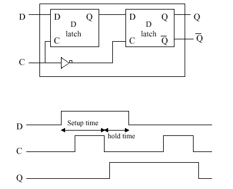
Figure
1.30. The D flip-flop with timing diagram, adapted from [Maf01].
Per Figure 1.30 the D flip-flop has the following timing behavior (determined from the D,C,Q signals below the latch circuit). When D goes high (0-1 transition), nothing happens to the latch until C goes high. (If D is low by the time C goes high, then the latch does not change state.) At the trailing edge of the clock pulse (1-0 transition), Q goes high if it was previously low. If Q was previously high, nothing happens to Q. When D goes low, nothing happens to Q until the clock pulse goes low. Then, after a propagation delay, Q goes low.
There are two critical time intervals associated with the D flip-flop. The setup time is the time required to keep D high, in order to wait for the trailing edge of the clock pulse. The hold time is the time required to hold D high after setup, to ensure that Q stays high.
Self-Exercise. (1) Derive the truth table for each of the four input states of the D flip-flop as shown in Figure 1.30. Hint: Input states are defined by the values of D and C (e.g., State 0: D = 0, C = 0->0; State 2: D = 0, C = 0 -> 1; etc.)